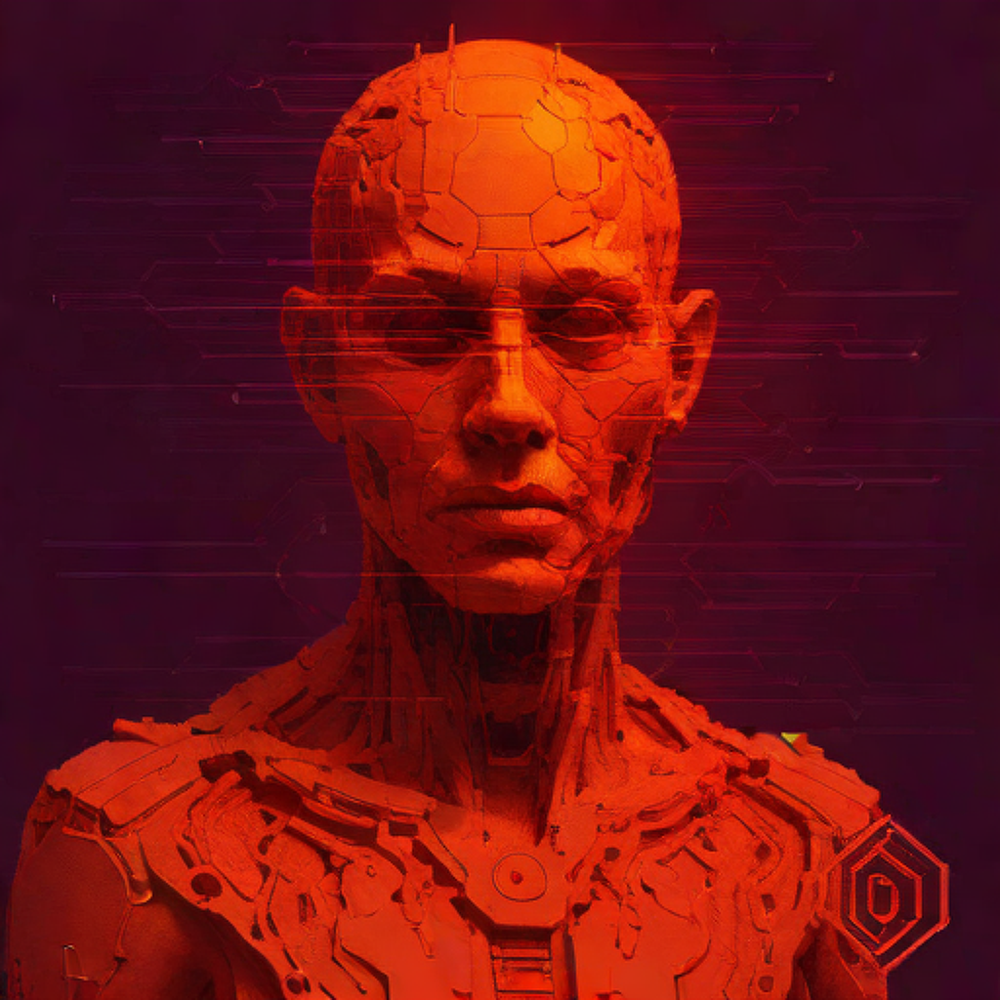
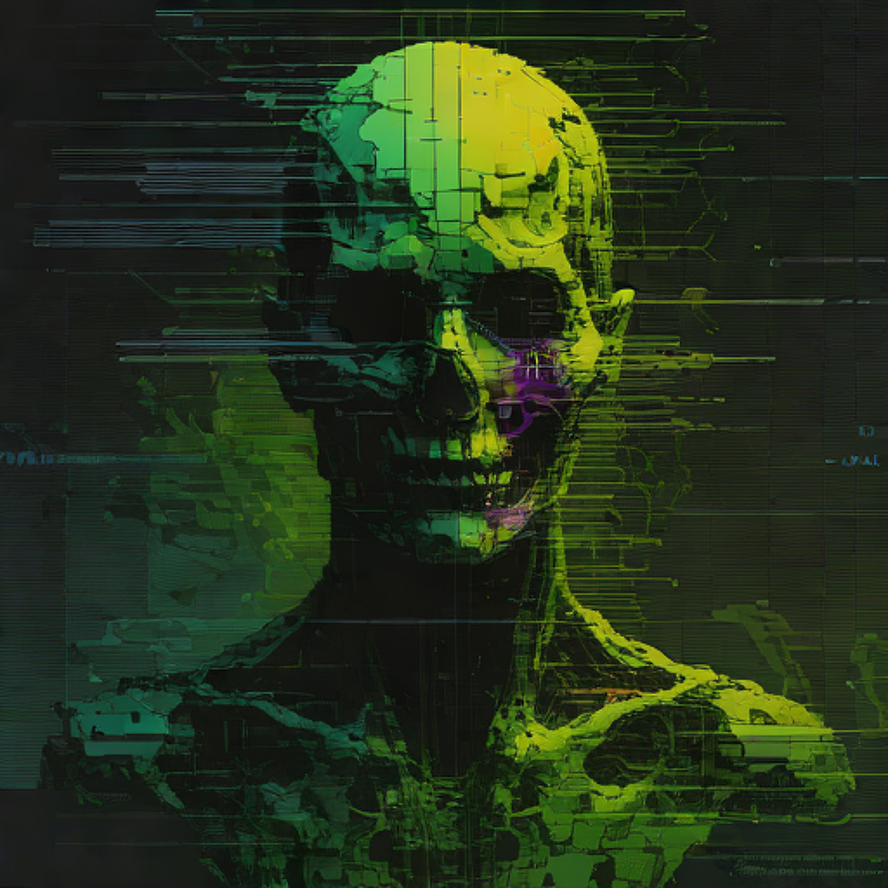

Genesis (100) Archive OriginCorruption TypeEmotion Signature Visual IntegrityRecovery LevelLegacy Seal A primeira camada do arquivo: traços quase íntegros, mínima corrupção, detalhes de alto contraste. Símbolos ancestrais do “pré‑máquina”.
 Cultural (555) Archive OriginCorruption TypeEmotion Signature Visual IntegrityRecovery LevelLegacy Seal Memórias coletivas preservadas por ecos de linguagem, estética e mitos digitais. Misturam ruído e padrão de forma elegante.
Emotional (1000) Archive OriginCorruption TypeEmotion Signature Visual IntegrityRecovery LevelLegacy Seal Picos de intensidade afetiva registrados em imagens instáveis. Glitches guiados por rastro neural, com forte assinatura de cor.
 Corrupted (1678) Archive OriginCorruption TypeEmotion Signature Visual IntegrityRecovery LevelLegacy Seal Dados recuperados à beira do colapso: artefatos brutais, leitura imperfeita, beleza no erro. O limite entre memória e ruído.